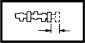
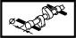

INTAKE AND EXHAUST CAMSHAFT
- Path
- Technical Data > Manufacturing data > 10 ENGINE > 1036 TIMING SYSTEM > INTAKE AND EXHAUST CAMSHAFT
- Kind
- technical data / specifications
- Applies to
- all engines; all production periods
- Interactive page
- https://sloeber94.github.io/elrnDB-lYpsln/en/#/2427760
Applies to: all engines; all production periods
Camshaft cam height (mm) | Validity |  | ||
|---|---|---|---|---|
Exhaust | Inlet | |||
8 | 8 | 1.2 8v | ||
Centre bearing diameter (mm) | Validity |  | ||
23.500 - 23.515 | 1.2 8v | |||
End float (mm) | Validity |  | ||
0.10 - 0.20 | 1.2 8v | |||
End float (mm) | Validity | |||
0.15 ÷ 0.34 | 1.3 JTD | |||
Journal diameter (mm) | Validity | | ||
First pin | Second pin | Third pin | ||
38.500 ÷ 38.515 | 38.000 ÷ 38.015 | 30.000 ÷ 30.015 | 1.3 JTD | |
Nominal cam lift (mm) | Validity | | ||
9.5 | 1.2 8v | |||
Nominal cam lift (mm) | Validity | |||
Exhaust | Inlet | |||
7.5 | 6.4 | 1.3 JTD | ||
Side bearing diameter (mm) | Validity | | ||
24.000 - 24.015 | 1.2 8v | |||
Support diameter (mm) | Validity |  | ||
First support | Second support | Third support | ||
38.545 ÷ 38.570 | 38.045 ÷ 38.070 | 30.045 ÷ 30.070 | 1.3 JTD | |